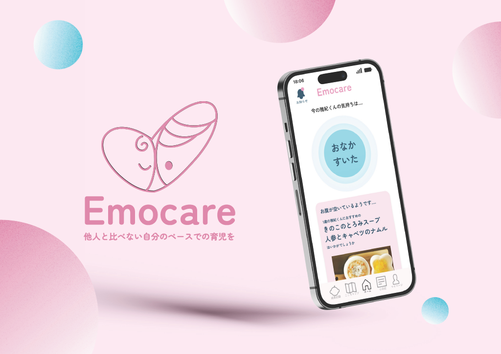
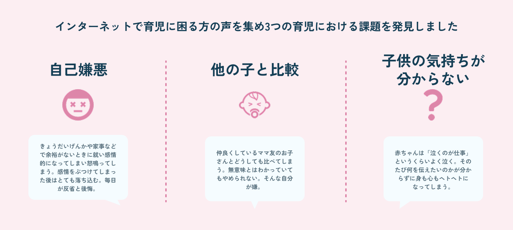
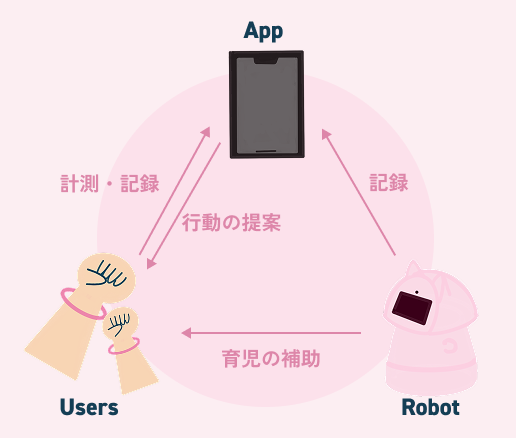
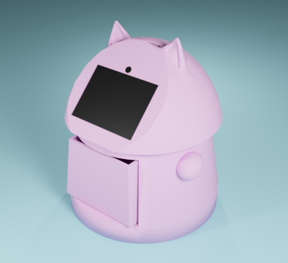
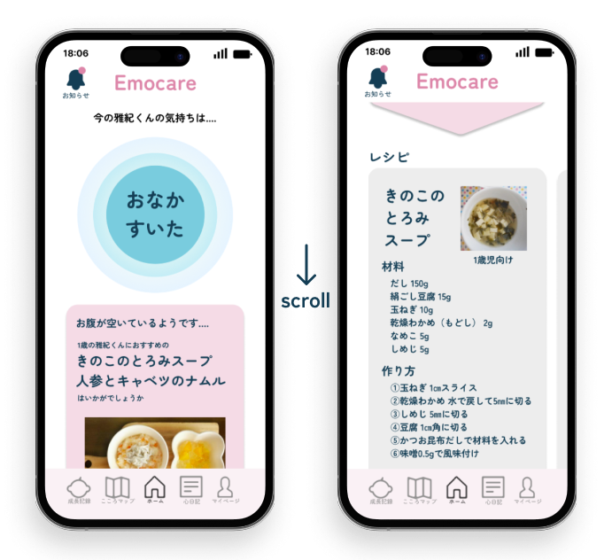
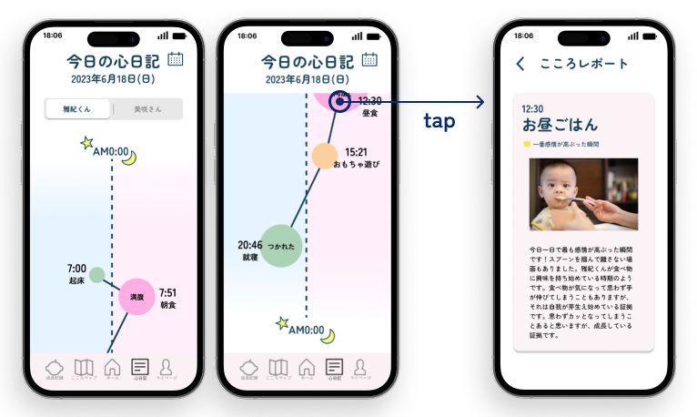
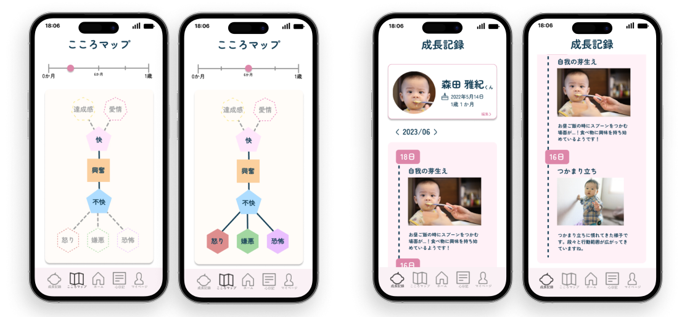
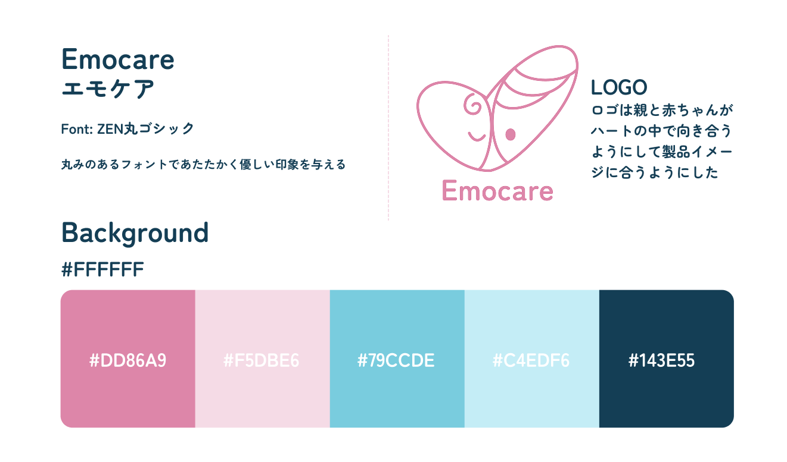

Concept
他人と比べない自分のペースでの育児を提案する子育て支援
大学のUI/UXデザインの授業で出された「教育分野の近未来社会におけるUXデザイン提案」というテーマのもと、制作しました。住友理工株式会社から心拍数などの生体情報の取得が可能な生体センサ「モニライフ」を用いて赤ちゃんの感情を読み取り、親への行動の提案・子供の感情の記録を取るサービスです。
Research & Problem
調査によって見えてきた3つの課題
少子高齢化が進む現代において、社会の活力を維持するための「育児支援」に焦点を当てました。
解決のアプローチとして、これまで医療やスポーツ分野で主に用いられていた生体センサが、10~15年後に「感情推定」まで可能になる近未来社会を想定。その未来のテクノロジーを日常的な子育てにどう馴染ませるかを考えました。
どのような支援が本当に求められているかを探るため、インターネット上で育児に疲弊する親の声をリサーチした結果、以下の3つの深刻な課題(ペインポイント)が浮き彫りになりました。

3つの課題
System Approach
3つの要素が連携するシステム
夫の育休が明け、日中を一人で育児(ワンオペ)しなければならない母親をコアターゲットに設定。彼女たちの心理的・肉体的負担を総合的にサポートするため、3つの要素(ユーザー・アプリ・ロボット)が連携するシステムを設計しました。

システム図
リストバンド（生体センサ）からユーザーの感情を計測・記録し、アプリで子供の感情に合わせた行動を提案。さらにロボットが物理的な育児の補助（子供の歩行補助や遊び相手など）を行うことで、デジタルとフィジカルの両面から親をサポートします。
Robot Design
EmoNeko
アプリの中の情報提示だけでなく、現実空間での物理的なサポートを行うハードウェアとして、自立型ロボット「EmoNeko」を考案しました。プロトタイプの視覚化のためにBlenderを用いて3Dモデリングを行いました。

EmoNeko
子供の自立を促す歩行補助器として機能するよう、高さを45cmに設定し、猫の耳部分を掴みやすいハンドルに見立てています。子供が体重をかけても転倒しないよう、下部のボリュームを大きくして重心を低く保つなど、安全性と物理的な要件から逆算した形状設計を行いました。
顔部分のディスプレイは親しみやすい表情を映し出すだけでなく、子供向けの動画再生インターフェースとしても機能します。さらに、親が装着した生体センサから強い疲労やストレスを検知した際は、ロボット側からリラックス方法を提案するなど、データに基づいた能動的なケアを行います。
高度なテクノロジーを搭載したデバイスであっても、機械的な冷たさや威圧感を与えないよう配慮しました。全体を丸みを帯びたフォルムで構成し、視覚的に優しいパステルピンクを採用することで、育児中の張りつめた生活空間に温かみをもたらす存在を目指しています。
UI & Experience Design
生体センサから取得した複雑なデータや子供の感情を、疲労している親が「一目で直感的に理解できる」ようにするためのUIを設計しました。
リアルタイムな状態検知からのシームレスな行動提案
ホーム画面では、リストバンドから取得した「今の気持ち」をリアルタイムに表示します。さらに、ただ状態を知らせるだけでなく、検知した状態(例：おなかがすいた)に合わせて、次に取るべきアクション（例：レシピの提案）をシステム側から能動的に提案し、親の心理的負担を即座に軽減します。

ホーム画面
デバイス連携による記録の自動化と日々の振り返り
ロボットとウェアラブル端末を連携させ、1日のタイムラインを自動生成する「こころ日記」を設計しました。感情が高ぶった瞬間を詳細レポートとしてピックアップすることで、余裕が無かった日中の出来事を後から客観的に振り返ることが出来ます。レポートにある赤ちゃんの画像はロボットが自動で撮影したものです。

こころ日記/レポート
感情の発達と成長を実感する長期的な記録
毎日の記録の蓄積から、数カ月～一年単位の長期的な発達を可視化します。単純な快・不快が達成感や愛情へと複雑化していく過程をツリー上に示す「こころマップ」と、写真付きの「成長記録」により、育児のモチベーションとなる子供の確かな成長を実感できる体験を構築しました。

こころマップ/成長記録
高度なセンシング技術を裏側で動かしつつも、表出するアプリの手触りはあくまで人間に寄り添うものであるべきだと考えました。丸みのあるフォント（ZEN丸ゴシック）とソフトなパステルカラーを採用し、サービス全体で一貫した優しさとあたたかみを感じられるデザインシステムを定義しています。

デザインシステム
Philosophy
現在の私とのつながり
大学でのUI/UXデザインの学びを通して、「どれほど裏側で高度なシステムが動いていても、表出する体験は常にユーザーに寄り添う温かいものであるべきだ」という視点を養いました。
これが現在の私のモノづくりの大きな土台となっています。体験者の視点を軸に据えながら、現在は画面の中にとどまらず、インタラクティブ表現（Unity /
TouchDesigner）の実装へと領域を広げています。